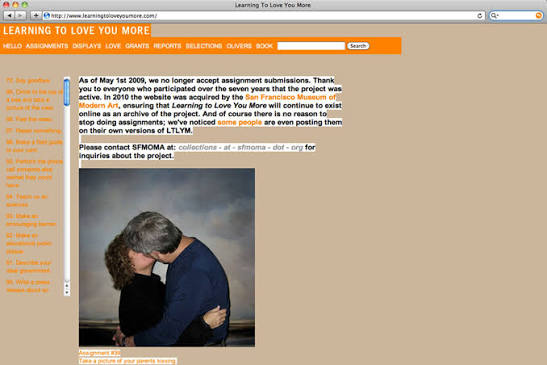
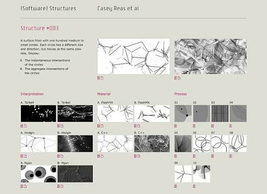
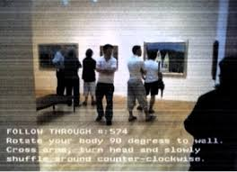
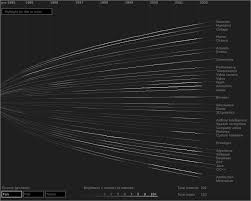

| WEB ARTIST |
150 CHARACTER DESCRIPTION OF WORK |
LINKED THUMBNAIL |
| Miranda July |
Miranda July is known for her quirky yet emotive work. Her 2002 project Learning to Love You More engaged people both on and off the screen.
|

|
| Tina LaPorte |
LaPorta’s project voyeur_web contemplates public versus private life, and surveillance, while also bringing our attention to the role of the camera itself.
|

|
| Casey Reas |
Reas plays with the concept of instructed artistic works. This work establishes itself as ‘software art’ and uses code to create constantly shifting visual patterns.
|

|
| Jennifer Crowe and Scott Paterson |
Crowe and Paterson use interactive media and physical instructions to make museum visitors actively participate in and rethink the experience of viewing art. |

|
| Martin Wattenberg |
Wattenberg maps early net art through an interactive timeline, using lines, data, and hyperlinks to show connections between evolving artworks and ideas. |

|